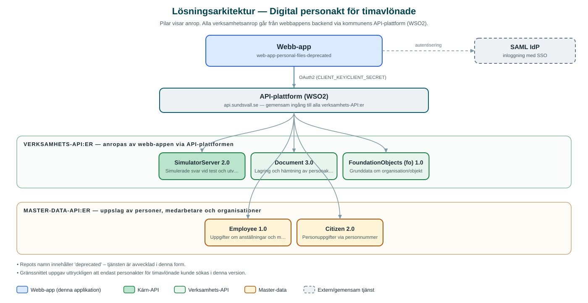

Digital personakt för timavlönade
Avvecklad intern tjänst för att söka fram digitala personakter för timavlönade medarbetare och hantera dokument kopplade till anställningar.
Om applikationen
Tjänsten gav behöriga medarbetare, exempelvis inom HR, möjlighet att söka fram personakter via personnummer. I denna version omfattades enbart timavlönade medarbetare. Från personakten visades personens anställningar, och dokument kunde laddas upp till respektive anställning eller tas bort.
Behörigheten styrdes via inloggning med SAML och behörighetsgrupper i flera nivåer (läsbehörighet, administratör och superadministratör).
Repot är markerat som avvecklat (deprecated) och tjänsten ska inte betraktas som aktiv i denna form.
Det här stödjer applikationen
- Sök personakt – Sökning via personnummer för att öppna en timavlönad medarbetares personakt.
- Anställningsöversikt – Visar personens anställningar kopplade till akten.
- Dokumenthantering – Ladda upp och ta bort dokument kopplade till en anställning.
- Behörighetsnivåer – Åtkomst styrd av behörighetsgrupper med olika rättigheter.
Teknisk dokumentation
Nedan beskrivs hur applikationen är uppbyggd, vilka API:er den använder och vad som krävs för att driftsätta den. Informationen är härledd ur källkoden och dess konfiguration på GitHub.
Arkitektur

Applikationen består av en webbaserad frontend (Next.js (App Router), React, TypeScript, sk-web-gui, Tailwind CSS, Zustand, react-hook-form, i18next) och en backend (Node.js, Express, routing-controllers, Passport SAML, Prisma, Multer (filuppladdning)) som utvecklas i samma kodbas. Verksamhetsanrop går via kommunens gemensamma API-plattform (WSO2) – frontend pratar aldrig direkt med underliggande system. Inloggning: SAML (SSO) med behörighetsgrupper (AUTHORIZED/ADMIN/SUPERADMIN). Övriga integrationer som förekommer i koden: SAML IdP, WSO2 API-gateway.
Teknikstack
- Frontend: Next.js (App Router), React, TypeScript, sk-web-gui, Tailwind CSS, Zustand, react-hook-form, i18next
- Backend: Node.js, Express, routing-controllers, Passport SAML, Prisma, Multer (filuppladdning)
API-beroenden
Applikationen konsumerar följande API:er via kommunens API-plattform. Versionerna är hämtade ur källkodens API-konfiguration.
| API | Version | Användning |
|---|---|---|
| SimulatorServer | 2.0 | Simulerade svar vid test och utveckling |
| Document | 3.0 | Lagring och hämtning av personaktens dokument |
| FoundationObjects (fo) | 1.0 | Grunddata om organisation/objekt |
| Employee | 1.0 | Uppgifter om anställningar och medarbetare |
| Citizen | 2.0 | Personuppgifter via personnummer |
Konfiguration och driftsättning
- .env-filer för frontend och backend utifrån .env-exempel
- CLIENT_KEY/CLIENT_SECRET mot kommunens API-gateway
- SAML-certifikat, nycklar och callback-URL:er
- Behörighetsgrupper via AUTHORIZED_GROUPS, ADMIN_GROUPS och SUPERADMIN_GROUPS
Noterbart ur källkoden
- Repots namn innehåller 'deprecated' – tjänsten är avvecklad i denna form.
- Gränssnittet uppgav uttryckligen att endast personakter för timavlönade kunde sökas i denna version.
Källkod
Källkoden är öppen och finns hos Sundsvalls kommun på GitHub. I källkodsförrådet finns även instruktioner för att klona, konfigurera och starta applikationen i egen miljö.